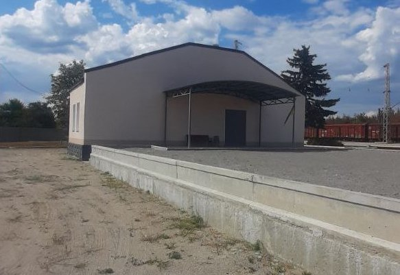
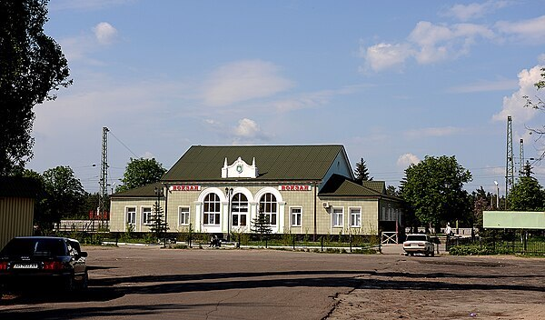
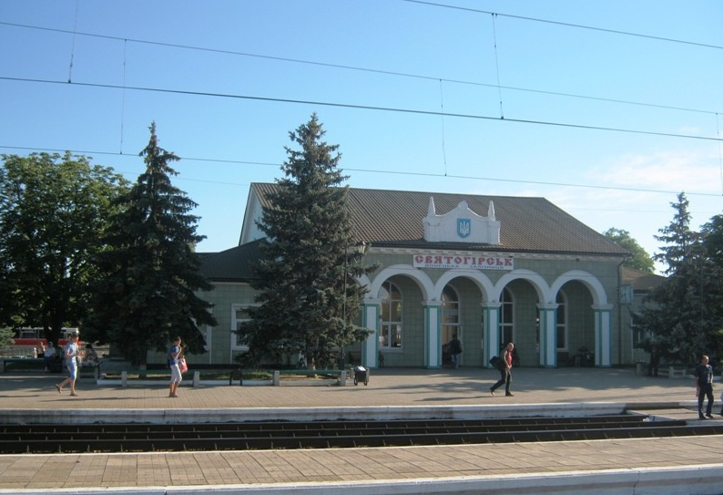

Как добраться в Святогорск!
Первый и самый дешёвый способ это автобус, типа маршрутка!
Стоимость проезда Краматорск-Святогорск 150 грн.
Телефон для справок: (050) 273-83-27
Отправка автобуса от Укрпочты, на фото.

Так выглядел наш автовокзал, фронт Перон
Перон


В Святогорск
| Краматорск АС | Славянск АС | Святогорск |
|---|---|---|
| 7-00 | 7-30 | 8-10 |
Второй рейс
| Краматорск АС | Славянск АС | Святогорск |
|---|---|---|
| 14-00 | 14-30 | 15-10 |
Из Святогорска
| Святогорск | Славянск АС | Краматорск АС |
|---|---|---|
| 8-45 | 9-25 | 10-00 |
Второй рейс
| Святогорск | Славянск АС | Краматорск АС |
|---|---|---|
| 15-45 | 16-40 | 17-10 |
Телефон для справок: (050) 273-83-27
Отправка автобуса от Укрпочты, на фото.
Так выглядел наш автовокзал, фронт
Перон
А так же возможно воспользоватся такси
Служба такси "Своё такси 905", короткий номер "905"
Через ЖД вокзал проходит поезд Изюм — Лиман
В расписании возможны измеения, уточняйте!
| Изюм ЖД Вокзал | Святогорск | Лиман ЖД Вокзал |
|---|---|---|
| 5-00 | 5-50 | 7-18 |
| Лиман ЖД Вокзал | Святогорск | Изюм ЖД Вокзал |
|---|---|---|
| 7-35 | 9-01 | 9-53 |
| Изюм ЖД Вокзал | Святогорск | Лиман ЖД Вокзал |
|---|---|---|
| 13-00 | 13-50 | 15-18 |
| Лиман ЖД Вокзал | Святогорск | Изюм ЖД Вокзал |
|---|---|---|
| 15-40 | 17-06 | 17-58 |
Так сейчас выглядит железнодорожная станция Святогорск

Так она выглядила раньше

